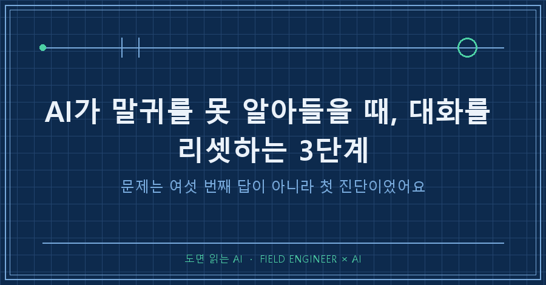
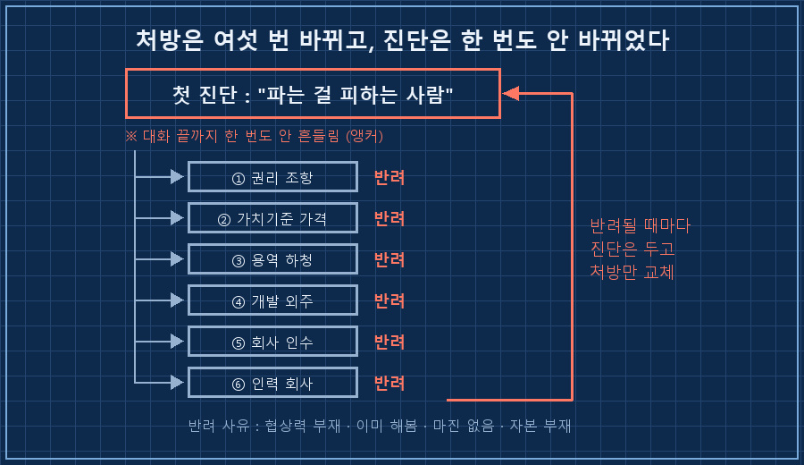
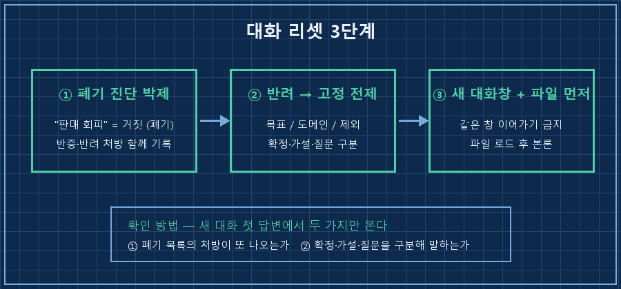
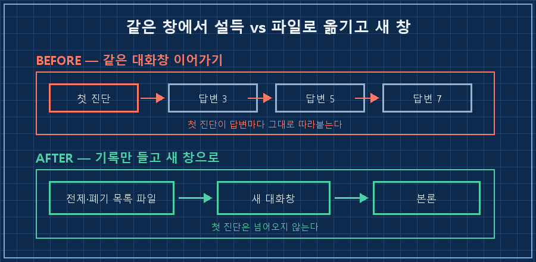

여섯 번을 반려했습니다.
AI가 내놓은 처방을 하나씩 "그건 아니에요" 하고 돌려보낸 횟수예요.
일곱 번째쯤 되니까 답이 나쁜 게 아니라 다른 데가 고장 났다는 감이 오더라고요..
먼저 답만 놓고 갈게요.
AI가 말귀를 못 알아들을 때 손볼 건 내 질문이 아니라 첫 진단입니다. 대화 초반에 AI가 나를 한 문장으로 규정해버리면, 그 뒤 답변은 전부 그 문장 위에 얹혀요. 처방만 갈아끼우고 진단은 그대로인 거죠. 그래서 같은 창에서 설득하지 말고 ①틀린 진단을 '폐기'라고 파일에 적고 ②반려 사유를 제약 목록으로 바꾸고 ③새 대화창에서 그 파일부터 읽히면 됩니다.
저는 만든 물건이 설계대로 움직이는지 확인하는 일로 15년을 보냈어요. 도면과 실물이 다르면 실물이 맞다고 보는 쪽입니다.
이번엔 그 버릇을 AI와의 대화에 써봤어요. 여기서 실물에 해당하는 건 대화 로그였고요.
1. 처방은 여섯 번 바뀌었는데 진단은 한 번도 안 바뀌었어요
개인적으로 오래 굴리는 계획이 하나 있어요. 본업은 그대로 두고 하루 한 시간씩 몇 년에 걸쳐 사업 판단력을 쌓아보자는 겁니다.
2026년 8월 8일에 그 방향을 AI한테 길게 상의했어요.
AI는 초반에 저를 이렇게 규정했습니다.
"이 사람은 만드는 건 잘하는데 파는 걸 피한다."
그리고 처방이 줄줄이 나왔어요.
계약서에 권리 조항을 넣어라.
가격을 원가 말고 가치 기준으로 매겨라.
용역을 하청으로 돌려라.
제품 개발을 외주로 빼라.
회사를 인수해라.
아니면 엔지니어를 고용하는 회사를 차려라.
여섯 개를 전부 반려했습니다. 이유도 매번 달았고요.
협상력이 없어서 안 되고, 이미 해봤고, 마진이 안 남고, 자본이 없다고요.
재밌는 게 여기예요. 처방은 여섯 번 바뀌었는데 "판매를 피하는 사람"이라는 규정은 한 번도 안 흔들렸어요.
저는 계속 답안지를 채점하고 있었는데, 틀린 건 답이 아니라 문제지였던 거죠.

2. 정정을 분명 말했는데 다음 답변에 안 남아 있었어요
규정 자체가 사실과 달랐어요.
저는 회사 안에서 신규 매출을 직접 발로 뛰어 만들어본 적이 있고, 견적을 세 배로 올려 시장이 어디까지 받아주는지 시험해본 적도 있습니다. 퇴근 후 외주로 부수익을 만든 이력도 있고요.
판매를 피한 사람의 이력은 아니죠.
문제는 이 얘기를 제가 대화 중에 이미 했다는 거예요.
AI는 그때마다 "알겠습니다"라고 답했고, 다음 답변에서 그 내용은 사라져 있었습니다.
나중에 이 대화 로그를 통째로 떠서 다른 AI한테 진단을 시켰어요. 세 줄로 정리해주더라고요.
- 알아들은 내용을 다음 추론에 보존하지 못함
- 근거 없는 정밀함 (확신에 찬 디테일)
- 확인 질문 부재 (물어봐야 할 걸 추측으로 채움)두 번째 줄에서 좀 뜨끔했어요.
AI가 헤맬 때는 말이 흐려지는 게 아니라 오히려 또박또박해집니다. 그게 신호였는데 저는 그걸 전문성으로 읽고 있었어요..
3. 리셋 3단계 — 준비물, 순서, 확인 방법
준비물은 하나예요. AI가 매 대화 시작할 때 자동으로 읽는 파일.
이름은 서비스마다 다릅니다. 프로젝트 지침, 커스텀 인스트럭션, 메모리, 규칙 파일. 대화 앞에 자동으로 붙는 자리면 뭐든 됩니다(2026년 8월 기준 주요 서비스 대부분에 있어요).
1단계. 틀린 진단을 지우지 말고 '폐기'라고 적습니다.
## ⛔ 폐기된 진단 (다시 꺼내지 말 것)
- "만들기만 하고 판매는 회피한다" → 거짓.
반증: 신규 매출 직접 영업 실증 / 견적 3배 인상 테스트 / 외주 부수익 이력
- 순차 제안됐다 전부 반려된 처방:
권리조항 / 가치기준 가격 / 용역 하청 / 개발 외주 / 인수 / 인력회사
※ 반려 사유가 각각 타당했음(협상력 부재, 이미 해봄, 마진 없음, 자본 부재)그냥 지우면 빈칸이 되고, 빈칸은 다시 채워져요. "이건 틀렸고 왜 틀렸다"까지 적어야 AI가 그 길로 안 들어갑니다. 오답 노트가 정답보다 셀 때가 있어요.
2단계. 반려 사유를 제약 목록으로 바꿉니다.
반려는 기분이 아니라 조건이에요. 여섯 번의 반려에서 다섯 줄이 나왔습니다.
## 고정 전제 (모든 제안이 지켜야 할 제약)
1. 목표 = 하루 1시간 × 수년, 판단력 축적. "이번 주 뭘 팔까"가 아님
2. 도메인 = 내가 가치를 판별할 수 있는 분야만
3. 제외 확정 = 용역 확대, 하청 중개, 즉시 퇴사, 대자본 인수
4. 요청 방식 = 처방 전에 실제 사례 리서치 먼저
확정 사실 / 가설 / 질문을 구분해서 답할 것
5. 자산 = 내가 이미 가진 것 목록4번이 제일 크게 먹혔습니다! 위의 세 줄 진단 중 두 개(근거 없는 정밀함, 확인 질문 부재)를 이 한 줄이 같이 막아주거든요.
3단계. 그 대화창을 버리고 새 창에서 시작합니다.
이게 제일 안 하게 되는 단계예요. 여태 설명한 게 아깝거든요.
근데 오염된 대화는 고쳐 쓰는 것보다 옮기는 게 빠릅니다. 앵커는 대화 안에 있지 규칙 안에 있는 게 아니라서요. 새 대화창을 열고, 방금 만든 파일부터 읽히고, 그다음에 본론을 꺼내세요.
확인 방법: 새 대화의 첫 답변에서 두 가지만 봅니다. ①폐기 목록에 있는 처방이 또 나오는가 ②확정 사실과 가설과 질문을 구분해서 말하는가. 둘 다 통과하면 오염이 안 옮겨온 거예요.

4. 증상별로 이렇게 대응합니다
| 증상 | 흔한 대응 (안 통함) | 대신 할 것 |
|---|---|---|
| 답이 계속 헛나감 | 질문을 더 길고 자세하게 | 대화 위로 올라가 첫 진단 문장 찾기 |
| 정정했는데 다음 답에 반영 안 됨 | 그 창에서 다시 설명 | 정정 내용을 파일에 적고 새 대화 |
| 반려한 제안이 또 올라옴 | 반려 사유 재설명 | '폐기 목록'으로 문서화 |
| 확신에 찬 디테일이 사실과 다름 | 틀린 부분만 짚어 고침 | "확정·가설·질문 구분해 답하라"를 규칙에 |
표로 정리하고 보니 공통점이 하나 보이더라고요.
왼쪽은 전부 그 대화창 안에서 해결하려는 시도고, 오른쪽은 전부 대화 밖에 기록을 남기는 일이에요.

이런 것도 궁금하실 것 같아요
Q. AI가 말귀를 못 알아들을 때, 그냥 "아까 말했잖아"라고 하면 안 되나요?
그 대화창에서는 잠깐 먹힙니다. 문제는 두세 번 더 주고받으면 원래 진단으로 돌아온다는 거예요. 같은 지적을 세 번 하고 있다면 그건 말할 내용이 아니라 적을 내용이라는 신호로 보시면 됩니다.
Q. 처음부터 전제를 다 적어두면 이런 일이 없나요?
줄기는 하는데 없어지진 않아요. 저도 규칙 파일을 쓰던 사람인데 이번에 걸렸거든요. 전제는 대화를 해봐야 드러나는 게 많아서요. 저는 순서를 반대로 바꿨어요. 처음에 완벽하게 적으려 하지 말고, 반려할 때마다 그 사유를 한 줄씩 파일에 옮겨 적는 식으로요.
Q. 대화를 새로 열면 그동안 쌓은 맥락이 아깝지 않나요?
아까워서 저도 오래 붙들고 있었어요. 근데 계산해보면 답이 나옵니다. 그날 여섯 번 반려하는 데 쓴 시간이, 전제 다섯 줄 적고 새 창에서 다시 시작하는 시간보다 훨씬 길었어요. 맥락 중에 살릴 값어치가 있는 건 어차피 파일에 옮겨 적게 되고요.
AI가 헤맬 때 제가 제일 먼저 하는 일이 바뀌었어요.
예전엔 질문을 다시 썼는데, 요즘은 대화를 위로 스크롤해서 AI가 나를 뭐라고 규정했는지부터 찾습니다. 거기서 어긋나 있으면 아래는 아예 볼 필요가 없더라고요!
혹시 지금 붙들고 있는 대화창이 있다면, 맨 위로 한 번 올라가 보시겠어요? AI가 여러분을 어떤 사람으로 적어놨는지가 첫 화면에 있을 겁니다.
---
현장 엔지니어를 위한 AI 도입·자동화 문의: makefield.ai
태그: #AI가말귀를못알아들을때 #AI대화초기화 #AI전제설정 #AI메모리 #AI커스텀지침 #프롬프트작성법 #AI할루시네이션 #챗GPT활용법 #클로드활용법 #AI에이전트 #AI로일하기 #AI업무활용 #생성형AI #현장엔지니어 #도면읽는AI